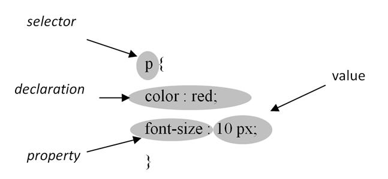

Основная задача Каскадных Стилей — это рассказать движку браузера,
как отрисовать элементы страницы — каким цветом, как позиционировать
их на странице, как украшать, и так далее.

Задание CSS-свойствам определённых значений — это основная функция CSS. Пара свойство-значение называется объявлением. Работа CSS движка заключается в поиске соответствий между объявлениями стилей и элементом на странице, чтобы правильно отобразить и форматировать этот элемент.